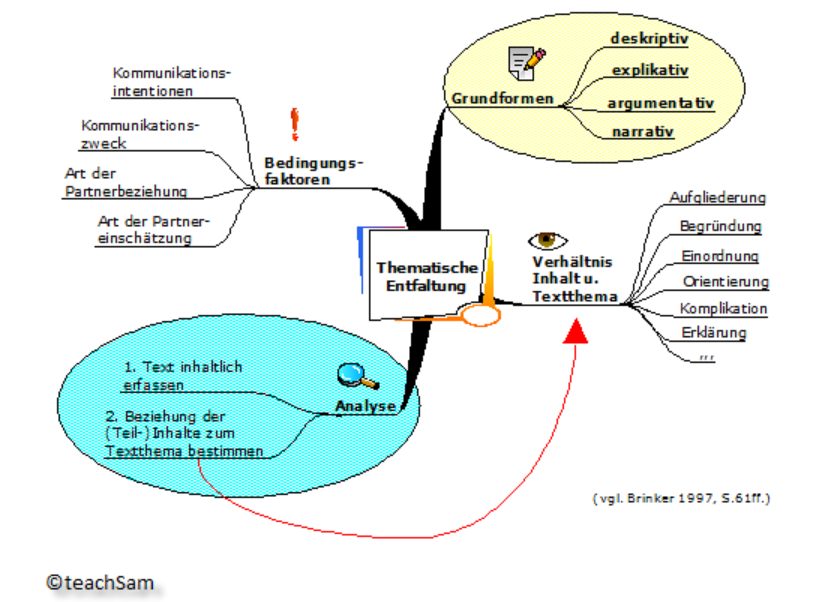
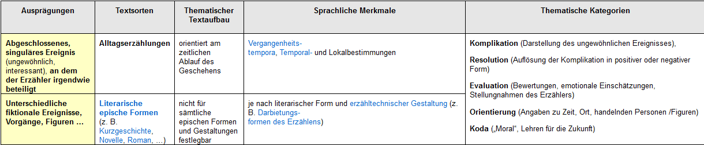
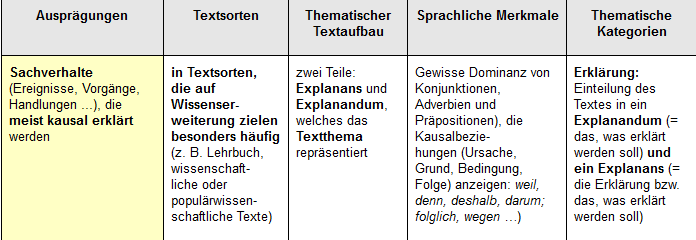

10 Redegegenstand
Mit dem Redegegenstand ist das Text-Thema gemeint.
10.0.1 Thema als Kern des Textinhalts
Textinhalt: bezogen auf “Gegenstände”: Person(en), Sachverhalt(e), Ereignis(se), Handlung(en), Vorstellung(en) …
Textthema: größtmögliche Kurzfassung des Textinhalts
Intention – kommunikative Absicht, die der Produzent mit seinem Text nach Meinung des Rezipienten verfolgt
Erschließung des Textthemas:
Wiederaufnahmeprinzip – zentrale Textgegenstände werden im Text wiederholt aufgerufen
- Die meisten Texte enthalten mehrere Themen: Themenhierarchie → Differenzierung zwischen Hauptthema und Nebenthemen
Ableitbarkeitsprinzip
Hauptthema: jenes, aus dem sich die übrigen Themen am überzeugendsten “ableiten” lassen
Kompatibilitätsprinzip
Thema und kommunikative Funktion des Textes bedingen sich gegenseitig. Hauptthema: jenes, das sich am besten mit der Textfunkton verträgt.
Beispieltext 1: Zimmer ausgebrannt
Aachen. – (1) Gegen 15 Uhr wurde gestern die Aachener Berufsfeuerwehr alarmiert. (2) Sie rückte in die Thomashofstraße aus, wo es in einer Wohnung brannte. (3) Die Feuerwehrleute löschten mit drei C-Rohren. (4) Oberbrandrat Starke war ebenfalls am Einsatzort. (5) Zwei Zimmer brannten vollkommen aus. (6) Drei weitere wurden ebenfalls in Mitleidenschaft gezogen. (7) Die Ursache des Brandes ist noch nicht bekannt. (8) Die Kripo hat sich inzwischen eingeschaltet. (9) Die Feuerwehleut mußten aus dem oberen Geschoß ein Kleinkind retten. (10) Während des Brandes befand sich niemand in der heimgesuchten Wohnung.
[Aachener Nachrichten, 17.2.1973]
- Zentrale Textgegenstände: a. Feuerwehr, b. Wohnung
- Wiederaufnahmen:
- die Aachener Berufsfeuerwehr, sie, die Feuerwehrleute, Oberbrandrat Starke, die Feuerwehrleute
- In einer Wohnung, zwei Zimmer, drei weitere, in der heimgesuchten Wohnung → Feuerwehreinsatz, Wohnungsbrand
- Textfunktion: informativ
- Textsorte: Zeitungsnachricht
- Gesamttext unter ‘Wohnungsbrand’ subsumierbar, jedoch nur teilweise unter ‘Feuerwehreinsatz’. → Ableitungsprinzip Kompatibel zur Textsorte (TS): ‘Wohnungsbrand’ als räumlich und zeitlich situiertes Ereignis.
Beispieltext 2: Pflegen und pflegen lassen
- Lassen Sie sich pflegen und pflegen Sie zurück. (2) Das macht nicht nur Spaß, es ist auch gut für die Haut.
- Für die Hautpflege am ganzen Körper gibt es nichts Besseres als Nivea milk. (4) Denn sie enthält alles, was die Haut braucht, um glatt, geschmeidig und jung zu bleiben.
- Nivea milk hat einen dezenten, angenehm frischen Duft. (6) Sie läßt sich leicht verteilen: sanftes Streicheln genügt. (7) Und sie zieht schnell ein, ohne Fettglanz zu hinterlassen.
- Machen Sie den nächsten Badetag zum Pflegetag. (9) Baden Sie sich und Ihre Familie nicht nur mit Wasser und Seife. (10) Sondern pflegen Sie sich anschließend auch mit Nivea milk.
[Für Sie, Juni 1972]
Textfunktion: Aufforderung, Empfehlung, teilweise argumentativ Thema (These) 1 – Für die Hautpflege gibt es nichts Besseres als Nivea milk. Thema (These) 2 – Hautpflege mit Nivea milk macht Spaß. T1 und T2 kopulativ verbunden Thematischer Schlüsselbegriff: ‘Pflege’ T1 ist her kompatibel mit der Textfunktion Pragmatisch ist T2 wichtiger (für den Rezipienten)
10.0.2 Thematische Entfaltung
Thematische Entfaltung = gedankliche Ausführung des Themas, wird durch situative und andere kommunikative Faktoren gesteuert.
Verknüpfung bzw. Kombination relationaler, logisch-semantisch definierter Kategorien, die die internen Beziehungen der in den einzelnen Textteilen ausgedrückten Teilinhalte bzw. Teilthemen zum thematischen Kern des Textes angeben.
Analyse: 1. Inhalt (in Form von Wortgruppe oder Aussagesatz) 2. logisch-semantische Relationen / kategoriale Bezeichnung T1 = Wohnungsbrand Teilthemen: Bekämpfung / Folgen / Ursachen
Werbeanzeige: Themen (Haupt- und Nebenthema) sind anders angeordnet und entfaltet als in der Zeitungsnachricht.
Hauptthema (HT) wird erwartungsgemäß begründet.
Nebenthema (NT) wird sprachlich und nicht-sprachlich (Abbildung) verdeutlicht.
HT und NT sind nicht logisch miteinander verbunden.
Grundformen der thematischen Entfaltung

- deskriptiv (beschreibend)
- narrativ (erzählend)
- explikativ (erklärend)
- argumentativ (begründend)
Gehören zum Alltagswissen der Sprachteilhaber.
Für jede von ihnen sind bestimmte semantisch-thematische Kategorien bzw. Verbindungen von Kategorien charakteristisch.
10.0.2.1 Deskriptive Themenentfaltung
Thema wird in seinen Komponenten (Teilthemen) dargestellt und in Raum und Zeit eingeordnet. Thematische Kategorien: Spezifizierung (Aufgliederung) und Situierung (Einordnung) Varianten: a. (Berichten) - einmaliger Vorgang, historisches Ereignis ‘Was’, ‘wer’, ‘wo’, ‘wann’, ‘wie’ … (‘warum’, ‘Folgen’) Vergangenheitstempora, Temporal- und Lokalbestimmungen TS – Nachricht, Bericht b. (Beschreiben) - regelhaft (generalisierbar, wiederholbar) dargestellter Vorgang: Teilvorgänge, zeitliches Nacheinander; Handlungsverben, absoluter Infinitiv (Anweisung, austauschbar durch VP); durchgehende Wiederaufnahmestruktur
- (Beschreiben) das Thema bezeichnet ein Lebewesen oder einen Gegenstand, z. B. Lexikonartikel Durchgehende Wiederaufnahme Teil-Ganzes oder Enthaltenseins-Relation Elefant: Merkmale, quantitative Angaben Evtl. Situierung, Spezifizierung, Zweck etc. Typische Textsorten: Nachricht, Bericht, Lexikonartike, wissenschaftliche Abhandlungen ← informative Texte –> Bedienungsanleitung, Kochrezept, Gebrauchsanweisung ← instruktive Texte Testament, Vertrag, Gesetz, Vereinbarung ← normative Texte

10.0.2.2 Narrative Themenentfaltung
knüpft an das von Labov und Waletzky entwickelte Modell zur Analyse von narrativen Strukturen in Alltagserzählungen an; Erzählen: “verbale Technik der Erfahrungsrekapitulation (…), in besonderen als die Technik der Konstruktion narrativer Einheiten, die der temporalen Abfolge der entsprechenden Erfahrung entsprechen”. Gliederung der Erzählung nach thematischen Kategorien: Orientierung (Personen, Zeit, Ort) Komplikation (Darstellung eines ungewöhnlichen Ereignisses) Evaluation (Bewertungen, Stellungnahmen, Einschätzungen des Erz.) Resolution (Auflösung der Komplikation – positiv / negativ) Coda (Stellungnahme des Erz. vom Erzählzeitpunkt aus; fakultativ)
Kriterien: Thema von Erzählungen wird durch ein abgeschlossenes, singuläres Ereignis repräsentiert. Interessantheitskriterien, Minimalbedingungen von Ungewöhnlichkeit. Beteiligung des Erzählers in irgendeiner Weise

10.0.2.3 Explikative Themenentfaltung
Modell der wissenschaftlichen Erklärung von C.G. Hempel und P. Oppenheim (H-O-Schema): Ein Sachverhalt, Explanandum – ‚das zu Erklärende‘ wird abgeleitet aus anderen Sachverhalten, Explanans – ‚das Erklärende‘ Explanans besteht aus: Anfangs- und Randbedingungen (A) allgemeinen Gesetzmäßigkeiten (G) Thema wird durch das Explanandum repräsentiert. Grammatische Form: Aussagesatz, oft auch Fragesatz
Die Heizungsrohre im Keller sind geplatzt, weil es heute Nacht Frost gegeben hat und die Glaswatteverkleidung für die Heizungsanlage nicht geliefert worden ist; denn Frost lässt das Wasser in den Heizungsrohren gefrieren, wenn sie nicht durch eine isolierende Verkleidung gegen Temperatureinflüsse geschützt sind. Explanans (A + G) A1 = Es hat heute Nacht Frost gegeben. A2 = Die Glaswatteverkleidung für die Heizungsanlage wurde nicht geliefert. G1 = Frost lässt das Wasser in den Heizungsrohren gefrieren, wenn sie nicht durch eine isolierende Verkleidung gegen Temperatureinflüsse geschützt sind. Explanandum: Die Heizungsrohre im Keller sind geplatzt.
Nicht immer explizit realisiert, oft implizit und/oder unvollständig. Häufig in Texten aus dem Alltagsbereich. Die Einteilung in Explanans und Explanandum muss erkennbar und rekonstruierbar sein. Dominanz an Konjunktionen, Adverbien und Präpositionen, die Kausalbeziehungen im weitesten Sinn (Grund, Ursache, Folge, Bedingung) bezeichnen. TS – „Erweiterung des Wissens“ – Lehrbuch, populärwissenschaftliche und wissenschaftliche Texte. Oft kombiniert mit der deskriptiven TE oder der argumentativen TE.

10.0.2.4 Argumentative Themenentfaltung
Argumentationsmodell von Stephen Toulmin. Allgemeine Struktur der Argumentation besteht aus sechs logisch-semantisch definierten Kategorien: Claim – These, Behauptung Textthema Grounds (Data) – Argumente Warrant – Schlussregel Backing – Aussagen, die die inhaltlichen Standards des Argumentationsbereichs stützen Qualifier – Modaloperator, Wahrscheinlichkeitsgrad von C Rebuttal – Ausnahmebedingungen, die W einschränken
D –> deshalb Q, C wegen W wenn nicht aufgrund von R B
Hans ist deutscher Staatsbürger. C Hans wurde in Deutschland geboren. D Wenn jemand in Deutschland geboren wurde, dann ist er in der Regel deutscher Staatsbürger. W aufgrund der folgenden Gesetze … B vermutlich, vielleicht Q z. B. beide Eltern waren Ausländer R
C und D – Grundlage von argumentativen Texten W, B – können auch implizit ausgedrückt werden oder mitgedacht sein, müssen in der Argumentationsanalyse explizit gemacht werden Einbettung – Situierung von These und Argumenten, häufig bei Zeitungskommentaren, z. B. historischer Rückblick, oft auch als B zu analysieren Wertbasis – zugrunde liegende Auffassung, wird bei den Lesern als vorhanden unterstellt, konsensuell präsupponiert, häufig nur implizit vorhanden KOMMENTAR vs. NACHRICHT – Prinzip der Subordination dominierend, kausal, konsekutiv, adversativ vs. Prinzip der Koordination, kopulativ, koordinierend
Appellative Texte: der Rezipient soll von etwas überzeugt werden, und ggf. zum Handeln veranlasst werden Normative Texte: Gerichtsurteile Informative Texte: Rezensionen, wissenschaftliche Abhandlung –> 11.12. – Texte auf S. 66-68, 73, 77-78,84
Error in knitr::include_graphics("pictures/Themenentfaltung_argumentative.png"): Cannot find the file(s): "pictures/Themenentfaltung_argumentative.png"10.0.3 Thematische Progression
Text-Thema, Thema-Rhema-Ansatz, Thematische Progression, Quaestio-Ansatz (aus: Vater 1992).
|
3.4 Textthema
und Thema-Rhema-Strukturen (in:
Vater 1992: 93-103) |
|
3.4.1 Textthema |
Nach VAN DUK (1980:50) lässt sich “der intuitive Begriff ‘Thema“ durch Makrostrukturen präzisieren:
“Jetzt
scheint ein Thema nun nichts anderes zu sein als eine Makroproposition auf
einem bestimmten Abstraktionsniveau.“
Das Thema von (3-23) ist als
ZUGREISE oder genauer als MACHEN (ICH, ZUGREISE) bestimmbar. Bei dieser Auffassung des Themas als Makroproposition impliziert
der Text das Thema. Das Umgekehrte, nämlich dass das Thema einen (und genau
einen) Text impliziert, dürfte nicht der Fall sein, da nach VAN DUK (1980) eine
Makrostruktur ja vielen Texten zugrunde liegen kann.
Ob ein Text mehrere Themen haben kann, wird weder von ihm noch von den
meisten anderen Textlinguisten erörtert. Dieser Gedanke ist nicht
abwegig: Musikstücke (z.B. Sinfonie-
und Sonatensätze) gewöhnlich mehrere Themen, im Zuge der Ausführung sowohl
miteinander kontrastiert als auch ineinander verschränkt.
Nach MACKELDEY (1987:39f.) ist “Thematizität“
ein Texten inhärentes Merkmal;
athematische Texte existieren nicht:
“Thematizität
liegt auch dann vor, wenn das Thema nicht allein aus dem Text, d.h. aus den
sprachlich manifesten Äußerungen selbst, sondern nur unter Zuhilfenahme
außersprachlicher Faktoren zu erschließen ist.“
Für MACKELDEY (1987:39) ist das Thema eines Textes sein “begrifflicher Kern“, der aus der
“Konzentration und Abstraktion des gesamten Textinhalts“ zu gewinnen ist. Er
verweist in diesem Zusammenhang auch auf WERLICH (1975), der den Text als
entfaltetes Thema ansieht. Nach dieser Auffassung bedingen Text und Thema
einander, ähnlich wie bei VAN DIJK (1980), doch eher in Form einer Interdependenz, nicht einer einseitig
gerichteten Implikation.
Das Thema kann im Text explizit genannt
werden oder nur implizit. Wenn
explizit, spricht VAN DIJK (1980:50) vom “Themawort“
oder “Themasatz“; sie haben die
kognitive Funktion, dem Leser oder Hörer die richtige Makrointerpretation des
Textes nahe zu legen. Typisch dafür sind Text-Titel,
etwa in der Zeitung: Sie sind Teil der Makrostruktur, so dass wir wissen, was
global in diesem Bericht zur Sprache kommt. Es gibt Fälle, wo das Thema ohne
einen solchen Titel für den Rezipienten kaum erschließbar wäre (vgl. T3 und
T26).
Andererseits kommen viele Texte ohne Titel aus (z.B. Predigten)
oder sie haben Titel, die erst nachträglich fabriziert wurden (bei Zeitungsartikeln)
und die oft den globalen Inhalt des Textes nur ungenügend (oder gar nicht)
wiedergeben. Interessant sind bestimmte Typen von Werbetexten, wo das durch den
Textanfang (oder Anfang der Bildfolge) suggerierte
Thema so gut wie nichts mit dem intendierten
Thema zu tun hat.
|
3.4.2 Thema-Rhema-Analyse |
“Thema“ (engl. “topic“) und “Rhema“ (“Focus“, engl. “comment“)
haben zunächst nichts mit Makrostrukturen von Texten oder mit dem Textthema zu
tun. Sie sind schon seit Jahrzehnten Teil der traditionellen Syntaxtheorie:
genannt werden die Prager Schule und
speziell MATHESIUS (1924 u. 1929) als Anfang der Thema-Rhema-Analyse, die (noch
vor Herausbildung der Textlinguistik) vorwiegend in Syntax und Semantik
entwickelt wurde.
Die Thema-Rhema-Gliederung von Sätzen rührt daher, dass Sätze
normalerweise nicht isoliert, sondern als Teile von Texten verwendet werden;
hierbei ist es nicht egal, wie ich einen Text beginne, sondern das hängt davon
ab, woran dieser Satz anschließt.
(3-28) a Ich muss an einer Konferenz in Berlin
teilnehmen.
b
Ich nehme das Auto.
b‘ Das Auto nehme ich.
(3-28)b ist eine natürlichere
Fortsetzung von (3-28)a als (3-28)b‘, der in anderen Kontexten angebrachter
wäre, z.B. nach (3-29):
(3-29) (Autoverkäufer:) Na, was sagen Sie dazu?
Die Betonung spielt bei der Thema-Rhema-Struktur eine ebenso große
Rolle wie die Konstituentenfolge
(LENERZ 1977 berücksichtigt sie bei Analysen der Abfolge nominaler
Satzglieder).
Nun gibt es verschiedene
Vorstellungen davon, was man unter “Thema“
und “Rhema“ zu verstehen habe. Drei Hauptansätze zur Definition von
“Thema“ und “Rhema“ werden bei SGALL/HAJIČOVA/BENEŠOVA (1973) unterschieden
(von denen dann nur einer, der sog. “Communicative Dynamism“ (CD), weiter verfolgt wird). Besonders verbreitet ist allerdings nicht
der CD-Ansatz, sondern der, nach dem
das Thema alte (etablierte,
bekannte) Information enthält, das Rhema
dagegen neue, über das
Etablierte hinausgehende. REIS (1977:212):
“Die kommunikative Unterscheidung, die mit Topic (Thema): Focus (Rhema,
Comment) angestrebt wird, ist intuitiv klar, ohne dass freilich die zu ihrer Explikation verwendeten Gegensatzpaare - alte : neue bzw.
bekannte : unbekannte bzw. kontextuell gebundene: ungebundene Information;
das, worüber man spricht : das, was darüber gesprochen wird - leicht zu präzisieren wären oder sich
in jedem Fall miteinander deckten.“
Thema und Rhema sind Kategorien der Performanz, nicht der
Kompetenz; sie beziehen sich nach
REIS (1977:212)
"nicht
primär auf die syntaktische Einheit Satz, ... sondern auf kommunikative Einheiten der Rede, gleich ob diese durch
mehrere Sätze, einen Satz oder nur Satzfragmente (z.B. bei Antworten)
verwirklicht sind. Von daher müssen auch nicht
alle Sätze eine Topic/Comment-Gliederung im oben explizierten Sinn
aufweisen - es gibt durchaus Sätze, die
als ganze thematisch oder rhematisch sind ...".
Bei Textanfängen finden sich naturgemäß oft rhematische Sätze. Ein voll
thematischer Satz meist nur bei Wiederholungen:
(3-30) A:
Wo ist Hans denn?
B: Hans ist in Bombay.
A: Hans ist in Bombay.
Na so was.
Als Beleg für einen rhematischen Satz führt REIS (1977:213)
den unterstrichenen Satz in (3-31) an:
(3-31) Do
you know what I read in the newspaper?
Hitler was a Jew.
All diese Thema-Rhema-Strukturen
sind textlinguistisch auf der Basis von Mikrostrukturen
zu analysieren.
|
3.4.3 Thema-Rhema-Analyse
von Texten |
Nun gibt es Versuche, Texte
durchgehend in Thema-Rhema-Strukturen zu zerlegen. Einen solchen Versuch
unternimmt DANEŠ (1970):
“Die eigentliche thematische
Struktur des Textes besteht dann in der Verkettung
und Konnexität der Themen, in ihren Wechselbeziehungen und ihrer
Hierarchie, in den Beziehungen zu den Textabschnitten und zum Textganzen, sowie
zur Situation. Diesen ganzen Komplex von thematischen Relationen im Text nenne
ich die “thematische Progression“ (TP).
Diese Progression stellt das Gerüst des Textaufbaus dar.“
Dies ist eine alternative Art, Makro- und Mikrostrukturen von Texten
abzuleiten, und zwar mithilfe der Thema-Rhema-Analyse.
Dabei unterscheidet DANEŠ
(1978:189) verschiedene Typen der TP:
- Einfache lineare Progression
- Typus mit durchlaufendem Thema
- Progression mit abgeleiteten Themen
- Entwicklung eines gespaltenen Rhemas
- Thematische Progression mit thematischem Sprung
|
- Einfache lineare Progression |
Das Rhema der
ersten Aussage wird zum Thema der zweiten usw.
T33 Textbeispiel (nach DANEŠ 1978:189)
Alle Stoffe bestehen aus Atomen.
Diese winzig kleinen Teilchen der Materie machen freilich ihrem Namen keine
allzu große Ehre, denn “Atom“ bedeutet ja “unteilbar“. Durch “Zerstrahlung“
einer Masse von einem Gramm Materie könnte eine Strahlungsenergie von 90 Billionen
Joule gewonnen werden. Diese Energiemenge ist gewaltig: es handelt sich um 25
Millionen Kilowattstunden.
Abb. 5
Thema-Rhema-Strukäzr von T33
T1 à R1
T2 (=R1) à R2
T3
(=R2) à R3
|
- Typus mit durchlaufendem Thema |
Hier werden einem Thema fortlaufend neue Rhemen zugeordnet.
T34 Textbeispiel (nach DANEŠ 1978:189f.)
Goethe war überzeugt von dem
Fortschritt der menschlichen Entwicklung. Er trat für die Erziehung des
Menschengeschlechts zur friedlichen Entwicklung ein ...Goethes Humanismus ging
aus von dem Glauben an das Gute im Menschen ... Goethe nannte sich ein ‘Kind
des Friedens“‘. (Aus dem Artikel: “Goethes Erbe in unserer Zeit“)
Abb.
6 Thema-Rhema-Struktur von T34
(T1 --> R1)
T2 (=R1) à R2
T2 (=R1) à R3
T2 (=R1) à R4
|
- Progression mit abgeleiteten Themen |
Hier sind Teilthemen von einem Hyperthema (hier:
geographische Daten über Rumänien) direkt abgeleitet.
T35 Textbeispiel (nach DANEŠ 1978:190)
Die Sozialistische Republik
Rumänien liegt am Schnittpunkt des 45. Breitengrades
mit dem 25. Längenkreis. Die Bodenfläche des Landes beträgt 235.500
Quadratkilometer; seine Bevölkerungszahl ist 19 Millionen Einwohner. Die
Staatsgrenze hat eine Gesamtlänge von Kilometern. ...
Abb.
7 Thema-Rhema-Struktur von T35
(T)
 |
T1 à R1
T2
à R2
T3 à R3
|
- Entwicklung eines gespaltenen Rhemas |
T36 Textbeispiel (nach DANEŠ 1978: 191)
Die
Widerstandsfähigkeit in feuchter und trockener Luft ist bei verschiedenen
Arten pathogener Viren sehr unterschiedlich. Poliomyelitisviren sterben in
trockener Luft sofort ab, während sie bei einer Luftfeuchtigkeit von 50%
relativ stabil sind. (...) Bei Grippeviren ist es hingegen umgekehrt; wenn die
Luftfeuchtigkeit unter 40% bleibt, so halten sie sich recht gut, sie gehen aber
rasch zugrunde, wenn die Luftfeuchtigkeit höher liegt (...).
Abb. 8
Thema-Rhema-Struktur von T36
T3 à R1 (=
R1‘+ R1“)
T2‘
à R2‘
 |
T2“
à R2“
Hier gibt es ein (explizites oder implizites) Doppelthema,
dessen Komponenten Ausgangspunkte für selbständige Teilprogressionen bilden.
Zuerst wird die eine Teilprogression entwickelt, danach die zweite usw.; der
Übergang zur nächsten Teilprogression wird durch verschiedene Sprachmittel
signalisiert (in T36 hat z.B. hingegen diese
Funktion).
|
- TP mit
thematischem Sprung |
DANEŠ (1978:191) nennt weiterhin
die TP mit thematischem Sprung, wo
in der Progression ein Glied der thematischen Kette ausgelassen wird.
z.B. In einem Text mit dem Thema Heirat Sprung à Brautkleid.
Diese fünf Typen werden nach DANEŠ (1978:192) in konkreten Texten meist nicht in reiner Form realisiert,
sondern auf verschiedene Weise kombiniert.
Außerdem werden die Progressionen im Text durch unterschiedliche Zusätze und
Parenthesen verwickelt.
|
Quaestio-Ansatz |
KLEIN/VON STUTTERHEIM (1987 und
1991) machen den interessanten Versuch, Textthema und Textstruktur dadurch zu
bestimmen, welche Frage(n) der Text beantwortet. Der Text in seiner Gesamtheit dient
ihrer Meinung nach (vgl. 1987:163) dazu,
eine explizite oder implizite Frage zu
beantworten, die Quaestio des Textes. Die einzelnen Äußerungen tragen zur
Beantwortung dieser Frage(n) bei, und die Beschränkungen, denen der Textaufbau
unterliegt, haben ebenfalls mit der Quaestio
zu tun.
Zu unterscheiden: die Quaestio des Gesamttextes (der
“Textfrage“) und die Quaestio einer
einzelnen Äußerung.
· Die Frage, wie man z.B. einen Marmorkuchen bäckt,
lässt sich nicht in einem Satz beantworten. Die Antwort verteilt sich auf
mehrere nacheinander geäußerte Sätze, die auf bestimmte Weise miteinander verknüpft
sind.
Jede Äußerung enthält zwei
Komponenten, die die Autoren “Topik“
und “Fokus“ nennen, für die im
folgenden Text die Termini “Thema“ und “Rhema“ benutzen werden. Das Thema gibt die Alternative an, die es
zu entscheiden gilt, das Rhema,
“welche Alternanten der Sprecher tatsächlich wählt“ (1987:164).
In der ‘Thema-Rhema-Literatur wird
gewöhnlich der Fragetest als Kriterium für
die Festlegung von Thema und Rhema genannt. Auch KLEIN/VON STUTTERHEIM
(1987) benutzen diesen Test, wobei sie davon ausgehen, dass auch die Teilnehmer
eines konkreten Kommunikationsvorgangs solche Fragen stellen - allerdings im
allgemeinen implizit.
· In (3-32) ist - aufgrund der vorangehenden Frage -
das Subjekt Rhema, in (3-33) das indirekte Objekt, in (3-34) die
Richtungsangabe; der Rest ist jeweils thematisch.
(3-32) (Wer ist gekommen?) - Hans ist gekommen.
(3-33) (Wem hast du den Schlüssel gegeben?) -
Ich habe den Schlüssel dem
Hausmeister gegeben.
(3-34) (Wohin fährt der Bus?) - Der Bus fährt zum Dom.
Natürlich kann auch ein ganzer Satz thematisch oder - besonders
am Textanfang - rhematisch sein
(vgl. (3-30/31) von REIS 1977).
Nun gehen die Autoren davon aus,
dass nicht jede Äußerung in einem Text
eine (partielle) Antwort auf die Quaestio des Textes ist. Das gilt nur für Äußerungen der Hauptstruktur, zwischen
diese sind jedoch Äußerungen eingeschaltet, die zur Nebenstruktur (zum Hintergrund) des Textes gehören (ebd., 181):
“Nebenstrukturen sind negativ definiert. Sie antworten nicht auf die Quaestio des Textes, obwohl sie natürlich
indirekt doch zu der gesamten Antwort beitragen.“
Der Ansatz von KLEIN/VON
STUTTERHEIM (1987) ist geeignet zur Analyse der Textstruktur als auch zur
Bestimmung des Themas. Die Information in
einem Text wird schrittweise entfaltet.
Da hierbei Referenzbeziehungen die Hauptrolle spielen, wird das Vorgehen von
KLEIN/VON STUTTERHEIM (1987/1991) im Zusammenhang mit der Textreferenz eingehend beschrieben.
10.0.4 Thematizität und Informativität
Aufgabe zur Verweisung (Aufgabe aus: Gross (1992) und Chunking; ; Text aus: Spiegel 1988).
Aufgaben zur Verweisung (L 22)
22.1 In
Kurzbiographien, -nekrologen (Nachrufen) u. dgl. wird versucht, möglichst viel
Information über eine Person auf engem Raum zu bieten, z.B. durch Prädikationen
(wurde zum Star, als Erbauer und
Direktor.. .). Welches textgrammatische Mittel wird im folgenden Text zu
diesem Zweck außerdem reichlich verwendet?
GESTORBEN - Philippe Baron de Rothschild. 85.
Gäste in seinem Schloß Mouton bei Bordeaux
pflegte der Sproß der legendären jüdischen Dynastie
mit der Anekdote von einem ordinären Roten zu unterhalten: Der Wein, den er
während des Ersten Weltkriegs in einem Cafe an der Seine mit seiner ersten
großen Liebe getrunken habe, sei der beste Tropfen seines Lebens gewesen. Doch
schon Anfang der zwanziger Jahre machte sich “Le Baron “daran, auf einem
vernachlässigten Weingut der Familie den “besten Wein der Welt“ zu keltern.
Zum Star der Pariser Gesellschaft wurde der promovierte Lebenskünstler als
Erbauer und Direktor des “Pigalle‘ Begleiter diverser
Buhnenschönheiten und als Finanzier von Ballett- und Theateraufführungen.
Die Nähe zu Kunstschaffenden bescherte dem Ex-Rennfahrer,
Filmproduzenten, Schriftsteller und Übersetzer elisabethanischer Gedichte sein
werbeträchtigstes Markenzeichen: Chagall, Picasso, Braque und Warhol entwarfen
die Flaschenetiketten. Salär: sechs Kisten “Mouton Rothschild“ pro Aufkleber.
Der hochdekorierte Widerstandskämpfer, dessen erste Frau im KZ Ravensbrück umgebracht
worden war, entkam selbst nur knapp den deutschen Nazibesetzern. Philippe Baron
de Rothschild starb vergangenen Mittwoch in Pari&
(aus: DER SPIEGEL 4, 1988, S. 218)
Aufgaben aus der Einführung in die germanistische Linguistik von Harro Gross (1992).
Aufgaben (L 24)
24.1 Analysieren Sie die TR-Struktur der folgenden Anekdote:
(0)
Mesalliance (B.
Brecht)
(1)
König Christian der Siebente heiratete eine Haushälterin.
(2a) Wenn er mit ihr in die Provinz reiste,
(2b) benahm sich
selbst der niedrige Adel ablehnend zu ihr. (3)
Sie hatte deshalb
ein schweres Leben. (4a) Beinahe das Schlimmste aber war es
für sie, (4b) daß
Christian sich beim Essen und auch sonst
wie
ein Bauer benahm.
24.2 Analysieren Sie die
TR-Struktur des folgenden Pressetextes:
(0) Mehr Scheidungen — weniger Ehen (aus:
SCALA)
(1a) Immer zögerlicher werden die
Deutschen, (1b) wenn es darum geht, einen Liebesbund durch Brief und Siegel zu
festigen. (2) Immer häufiger tritt an die Stelle der von Staat und Kirche sanktionierten
Ehe eine Partnerschaft ohne Trauschein oder gar ein Leben als ‘Single“ (3) Die
Zahl der jährlichen Eheschließungen sank seit 1960 um fast ein Drittel im Jahre
1982. (4a) Und diejenigen, (4b) die sich doch noch zur Ehe entschließen, (4a)
scheinen immer häufiger die falschen Partner zu wählen. (5) zumindest ziehen
immer mehr Paare die Konsequenzen aus dieser Erkenntnis. (6) Die Zahl der
Scheidungen stieg von 1960 bis 1982 um das Anderthalbfache. (la) Und entgegen
dem Sprichwort reut es am häufigsten jene, (7b) die jung gefreit haben. (8) Die
Ehen von Jungen, von 18- bis 20jährigen, enden besonders oft vor dem
Scheidungsrichter.
24.3 Analysieren Sie die
TR-Struktur dieses Grimmschen Märchens:
(0) Die
Wassernixe
(1a) Ein Bruderchen und ein Schwesterchen spielten an
einem Brunnen, (1b) und wie sie so spielten, (1c) plumpsten sie beide hinein.
(2a) Da war unten eine Wassernixe, (2b) die sprach:
2c) “jetzt habe ich euch, (2d)
jetzt sollt ihr mir brav arbeiten und führte sie mit sich fort. (3a) Dem Mädchen
gab sie verwirrten garstigen Flachs zu spinnen, (3b) und es mußte Wasser in ein hohles Faß
schleppen, (3c) der Junge aber sollte einen Baum mit einer stumpfen Axt hauen,
(3d) und nichts zu essen bekamen sie als steinharte Klolie.
(4a)Da wurden zuletzt die Kinder so ungeduldig, (4b) daß
sie warteten, (4c) bis eines Sonntags die Nixe in der Kirche war, (4d) da
entflohen sie. (5a) Und als die Kirche vorbei war (5b) sah die Nixe, (5c) daß die Vögel ausgeflogen waren, und setzte ihnen mit
großen Sprüngen nach. (6a) Die Kinder erblickten sie aber von weitem, (6b) und
das Mädchen warf eine Bürste hinter sich, (6c) das gab einen großen Bürstenberg
mit tausend und tausend Stacheln, (6d) über den die Nixe mit großer Müh
klettern mußte; (6e) endlich aber kam sie doch
hinüber. (7a) Wie das die Kinder sahen, (7b) warf der Knabe einen Kamm hinter
sich, (7c) das gab einen großen Kammberg mit tausendmal tausend Zinken, (7d)
aber die Nixe wußte sich daran festzuhalten und kam
zuletzt doch drüber. (8a) Da warf das Mädchen einen Spiegel hinterwärts, (8b)
welches einen Spiegelberg gab, (8c) der war so glatt, so glatt, (8d) daß sie unmöglich darüber konnte. (9a) Da dachte sie, (9b)
“ich will geschwind nach Haus gehen und meine Axt holen und den Spiegelberg
entzweihauen.‘ (10a) Bis sie aber wiederkam und das Glas aufgehauen hatte,
(10b) waren die Kinder längst weit entflohen, (10c) und die Wassernixe mußte sich wieder in ihren Brunnen trollen.
24.4 Analysieren Sie die
TR-Struktur des folgenden — belletristischen —Textausschnitts (Anfang einer
Skizze von M. Bieler):
(0) Winternacht
(1) Zerbst [eine Stadt] lag im Schlaf (2) Der Schnee
reichte bis an die Stadtmauern... (3a) Unter dem Schnee lagen die Häuser, (3b)
und in den Häusern waren die Wohnungen der Menschen, die Stuben der Soldaten
und die Ställe fürs Vieh. (4a) Das Vieh und die Soldaten schliefen nachts; (4b)
aber viele Menschen konnten nicht schlafen, (4c) weil sie an den anderen Tag
dachten oder überhaupt an die Zukunft, (4d) die kommen würde wie die städtische
Reinigung mit dem Pflug. (in) Sie wälzten sich hin und her und um und um, (5b)
und die einen weinten in ihr Kopfkissen, (5c) und die anderen beteten, (5d) und
die dritten lagen auf ihren Frauen, (5e) und wieder andere franken Schnaps,
(5f) und manche schliefen auch wie die Soldaten und das Vieh....